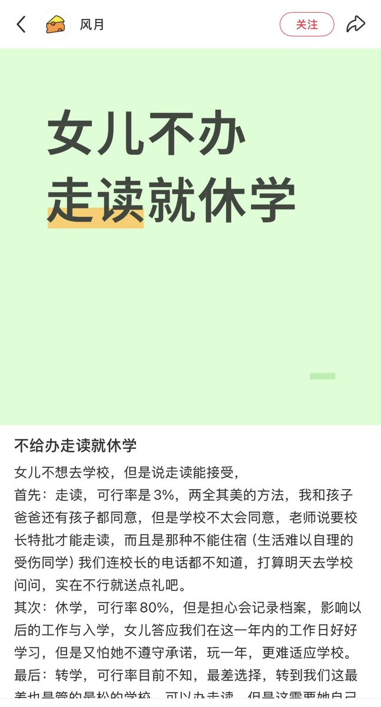
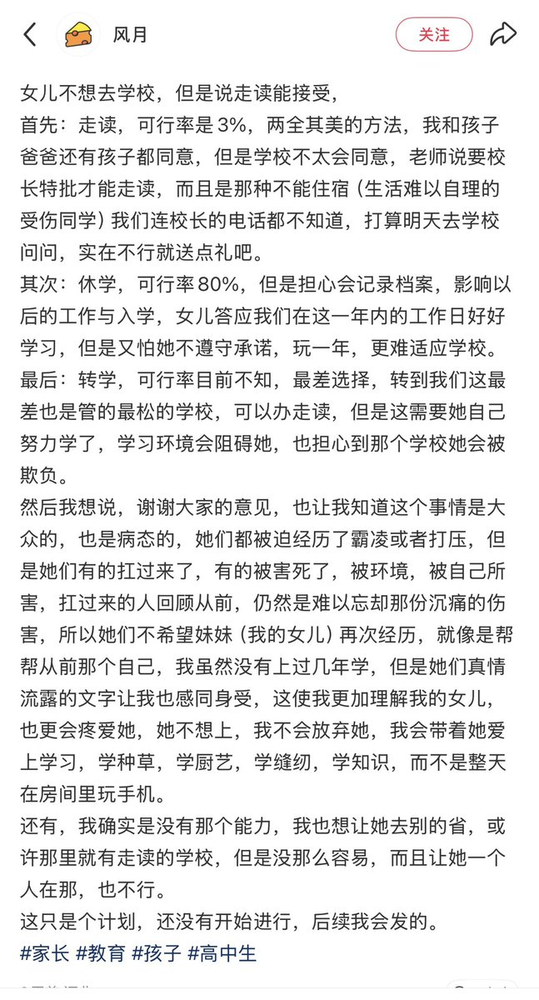
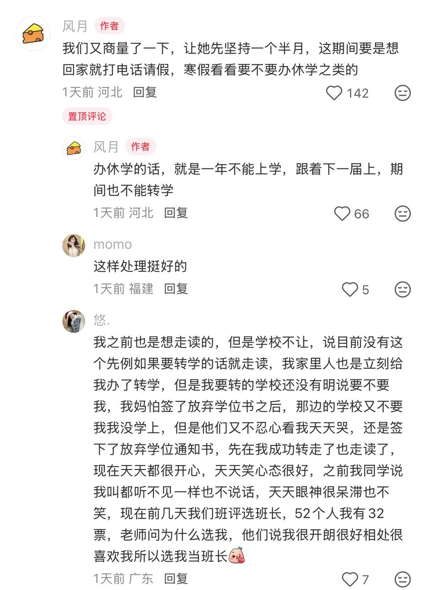

asuka 🏳️⚧️🍥🏳️🌈🏴
@H4lf_L13_F8964
@Windy_Skyline 我都没有任何商量的余地，扔进去说是严加管教，让我学会忍耐。到头来学校外本来在做的行当也搁浅了，想学点录音和cs的手艺被禁了说耽误学习。在学校里学衡水出来还得被送进去的人天天骂高分低能、眼高手低，能找到工作天理难容。两头赢



Partikel 👾
@Windy_Skyline
经典老中家长之上吊不舒服你先吊五分钟期间忍不住了我放你下来 https://t.co/CC5qvtlWWi